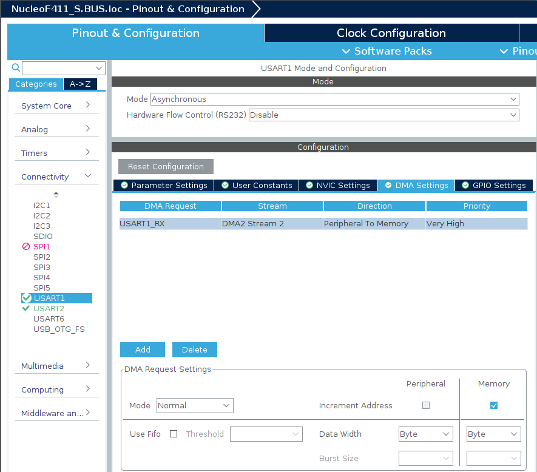

3. S.BUS
CubeMX
SBUSを受信するUARTの設定
USART1(PA9, PA10)を使用する． パラメーターの設定は以下の通り．
- Baud rate : 100000 Bits/s
- Parity : Even
-
Stop Bits : 2

-
DMAの有効化 
シリアルモニタに出力するためのUART
期待される動作
マイコンの起動後に，LEDが1秒間の点灯・消灯をした後にSBUSの受信を開始する． SBUSを正常に受信できている場合は，シリアルモニタにSBUSで受信している値が表示される．
マイコンと受信機の接続
マイコンと受信機の接続に必要な回路例を以下に示す．
- Vddに3.3Vを接続する
- VssにGNDを接続する
- 抵抗値は\(1k\Omega\)程度を使用する
- 図中央の記号はNchFETを表している
- 2N7000を使用し，動作確認をした
コードの解説
HAL_UART_Receive_DMA(UART_HandleTypeDef huart, uint8_t pData, uint16_t Size)
この関数はUARTをDMA(Direct memory access)モードで受信する関数である．DMAで受信するとき，受信完了を待たずに他の処理を実行できるため，プログラム全体の処理速度の観点で優れている．DMAの特徴は受信したデータをメモリーに転送する処理をCPUを使わずに行うことである．反対に，DMA以外ではデータを1バイト受信するごとにメモリーに転送する処理を行う必要がある．
HAL_UART_RxCpltCallback(UART_HandleTypeDef *huart)
この関数はDMAもしくはITでUARTによるデータの受信が終了した際に呼び出される関数である．どのUARTの通信が終了したかは引数を見ると確認できる．複数のUARTを使用するときはif(huart==&huart2){}のように場合分けを行う．
class SBUS{}
c++のclassという機能を使用してSBUSに関係する処理などを定義しています．見慣れない関数や書き方が多いと思いますが，c++の機能を解説すると長くなるので省略します．口頭で解説するので，解説が必要なら直接聞いてください．
ソースコード
wrapper.cpp
#include "wrapper.hpp"
#include "SBUS.hpp"
#include <functional>
#include <string>
#include <usart.h>
#include <gpio.h>
nokolat::SBUS sbus(&huart1);
std::array<int16_t, 8> buffer;
void init(void){
HAL_GPIO_WritePin(GPIOA,GPIO_PIN_5, GPIO_PIN_SET);
HAL_Delay(1000);
HAL_GPIO_WritePin(GPIOA,GPIO_PIN_5, GPIO_PIN_RESET);
HAL_Delay(1000);
HAL_UART_Receive_DMA(&huart1, sbus.getReceiveBufferPtr(),sbus.getDataLen());
}
void loop(void){
HAL_GPIO_WritePin(GPIOA,GPIO_PIN_5, GPIO_PIN_RESET);
}
void HAL_UART_RxCpltCallback(UART_HandleTypeDef *huart){
HAL_GPIO_TogglePin(GPIOA,GPIO_PIN_5);
sbus.setNeedParse();
std::string str;
for(uint8_t n=0; n<18; n++){
str = std::to_string(sbus.getData(n+1)) + " ";
HAL_UART_Transmit(&huart2, (uint8_t *)str.c_str(), str.length(), 10);
}
str = "\n";
HAL_UART_Transmit(&huart2, (uint8_t *)str.c_str(), str.length(), 10);
HAL_UART_Receive_DMA(&huart1, sbus.getReceiveBufferPtr(),sbus.getDataLen());
}
SBUS.hpp
#ifndef INC_SBUS_HPP_
#define INC_SBUS_HPP_
#include <array>
#include <iterator>
#include "usart.h"
namespace nokolat {
class SBUS {
public:
SBUS(UART_HandleTypeDef *husart = nullptr)
:husart(husart){}
virtual ~SBUS(){};
auto getBufferIterator(){
return receiveBuffer.cbegin();
}
uint8_t *getReceiveBufferPtr() {
return (uint8_t*)receiveBuffer.data();
}
void enableReciveIT(){
needParse = true;
HAL_UART_Receive_IT(husart, receiveBuffer.data(), 25);
}
int16_t getData(const uint8_t channel){
if(channel > 18 or channel < 1) return -1;
if(needParse){
parse();
}
return data[channel-1];
}
constexpr uint8_t getDataLen(){
return length;
}
void setNeedParse(bool arg=true){
needParse = arg;
}
private:
std::array<uint8_t,25> receiveBuffer;
std::array<uint16_t,18> data;
bool needParse;
UART_HandleTypeDef *husart;
const uint8_t length = 25;
void parse();
};
} /* namespace nokolat */
#endif /* INC_SBUS_HPP_ */
SBUS.cpp
#include "SBUS.hpp"
namespace nokolat{
void SBUS::parse(){
data[0] = receiveBuffer[1];
data[0] += ((int16_t)receiveBuffer[2] & 0b111)<<8;
data[1] = receiveBuffer[2]>>3;
data[1] += ((int16_t)receiveBuffer[3] & 0b111111)<<5;
data[2] = receiveBuffer[3]>>6;
data[2] += ((int16_t)receiveBuffer[4])<<2;
data[2] += ((int16_t)receiveBuffer[5] & 0b1)<<10;
data[3] = receiveBuffer[5]>>1;
data[3] += ((int16_t)receiveBuffer[6] & 0b1111)<<7;
data[4] = receiveBuffer[6]>>4;
data[4] += ((int16_t)receiveBuffer[7] & 0b1111111)<<4;
data[5] = receiveBuffer[7]>>7;
data[5] += ((int16_t)receiveBuffer[8])<<1;
data[5] += ((int16_t)receiveBuffer[9] & 0b11)<<9;
data[6] = receiveBuffer[9]>>2;
data[6] += ((int16_t)receiveBuffer[10] & 0b11111)<<6;
data[7] = receiveBuffer[10]>>5;
data[7] += ((int16_t)receiveBuffer[11])<<3;
data[8] = receiveBuffer[12];
data[8] += ((int16_t)receiveBuffer[13] & 0b111)<<8;
data[9] = receiveBuffer[13]>>3;
data[9] += ((int16_t)receiveBuffer[14] & 0b111111)<<8;
data[10] = receiveBuffer[14]>>6;
data[10] += ((int16_t)receiveBuffer[15])<<2;
data[10] += ((int16_t)receiveBuffer[16] & 0b1)<<10;
data[11] = receiveBuffer[16]>>1;
data[11] += ((int16_t)receiveBuffer[17] & 0b1111)<<7;
data[12] = receiveBuffer[17]>>4;
data[12] += ((int16_t)receiveBuffer[18] & 0b1111111)<<4;
data[13] = receiveBuffer[18]>>7;
data[13] += ((int16_t)receiveBuffer[19])<<1;
data[13] += ((int16_t)receiveBuffer[20] & 0b11)<<9;
data[14] = receiveBuffer[20]>>2;
data[14] += ((int16_t)receiveBuffer[21] & 0b11111)<<6;
data[15] = receiveBuffer[21]>>5;
data[15] += ((int16_t)receiveBuffer[22])<<3;
data[16] = receiveBuffer[23] &0b1;
data[17] = receiveBuffer[23] &0b10;
needParse = false;
}
}